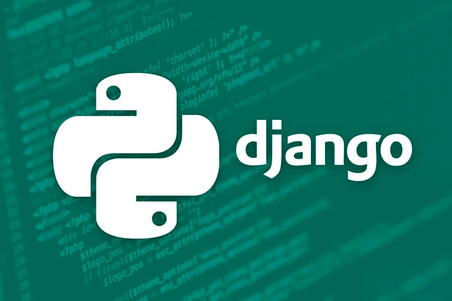
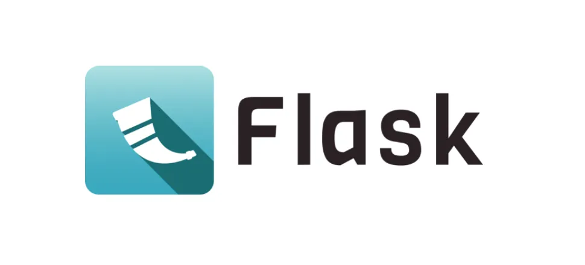
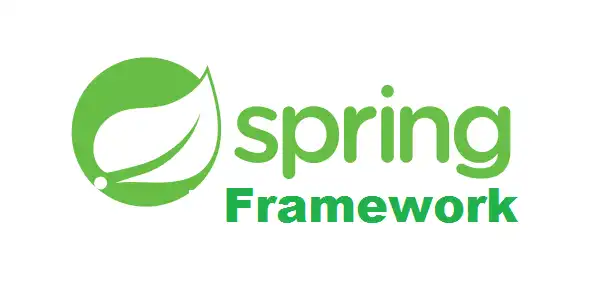

Introdução
A área de desenvolvimento de software é repleta de ferramentas e tecnologias, as quais são utilizadas para criar aplicações em diversos meios, como por exemplo WEB, Mobile e etc. Para isso, são utilizadas linguagens de programação, com o intuito de desenvolver tais aplicações. No entanto, também existem meios de facilitar esse desenvolvimento, focando em maximizar a produtividade e a efetividade, esses meios são conhecidos como Frameworks
Frameworks
O que são Frameworks
Na área de Tecnologia da Informação (TI), frameworks são esqueletos reutilizáveis de software que aceleram o desenvolvimento ao fornecer estrutura, padrões e código pré-testado, na qual código comum com funcionalidade genérica pode ser seletivamente especializado ou sobrescrito por desenvolvedores ou usuários.
Por que Frameworks são importantes?
Ao fornecer funcionalidades comuns "prontas para uso" e padronizar a montagem de componentes, os frameworks aceleram o processo de desenvolvimento e ajudam a atender aos padrões de codificação. Além disso, os softwares evoluem com o passar dos anos, e consequentemente, aumentam seu nível de complexidade. Sem o uso de frameworks, a construção desses novos softwares podem se tornar mais caras e difíceis, pois o desenvolvedor teria que desenvolver o código do zero.
Exemplos de Frameworks
Django

O Django é um framework web Python de código aberto, que se destaca por oferecer um ambiente que simplifica a criação de soluções web escaláveis, ao mesmo tempo, em que promove o desenvolvimento rápido e um design limpo, proporcionando ferramentas robustas e eficientes para pessoas desenvolvedoras.
Flask

O Flask é um microframework de desenvolvimento web criado com a linguagem de programação Python. Ele foi projetado para ser leve e minimalista, oferecendo apenas os componentes essenciais para a criação de uma aplicação web. Diferente de frameworks mais robustos, como o Django, o Flask permite maior flexibilidade. Com isso, ele possibilita que o desenvolvedor escolha as bibliotecas e ferramentas que deseja integrar ao projeto.
Spring

O Spring é um framework que oferece um modelo abrangente de programação e configuração para aplicações empresariais modernas baseadas em Java, em qualquer tipo de plataforma de implantação. Um elemento fundamental do Spring é o suporte à infraestrutura no nível da aplicação: o Spring concentra-se na "infraestrutura" das aplicações empresariais, permitindo que as equipes se concentrem na lógica de negócios da aplicação, sem vínculos desnecessários com ambientes de implantação específicos.
Critérios de Escolha
Para realizar a escolha de framework é preciso ter noção do projeto e de suas necessidades, visto que, cada uma dessas ferramentas é utilizada dependendo da complexidade do projeto. De forma geral, os principais critérios utilizados para a escolha do framework são:
- Linguagem de Programação utilizada
- Tipo de Aplicação que será feita
- Necessidades do Projeto
- Desempenho
- Manutenção
- Suporte
Conclusão
Em suma, não existe um framework ideal, a eficiência de tal ferramenta depende de várias camadas do projeto, a escolha deve considerar fatores como o objetivo da aplicação, a linguagem utilizada, os recursos oferecidos, a documentação, o suporte da comunidade, o desempenho, a segurança e a manutenção. Diante disso, a utilização de um framework deve ser baseada nas características e necessidades de cada projeto, buscando uma solução que contribua para um desenvolvimento mais eficiente e adequado aos seus requisitos.